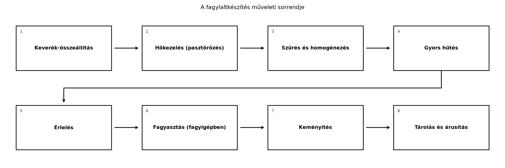

Képzelj el egy forró nyári péntek délutánt. A vendéglátóhelyen a fagylaltpult előtt sor áll. Az egyik fagyiskanálból az adag szépen formázható, lágy, bársonyos és nem olvad túl gyorsan. A másikból jégdarabos, morzsalékos, és a tölcsér alja csepegni kezd. Ugyanabból a keverékből indult ki mindkettő. A különbség nem a csoda: a hőkezelés, hűtés, érlelés, fagyasztás és keményítés lépései döntik el, hogyan oszlik el a zsír, mekkorák a jégkristályok, és mennyi levegőt tart a kész fagylalt.
Szabály. A fagylaltkészítés során minden művelet célja, hogy a keveréket úgy alakítsa át, hogy a fagyasztott termék apró jégkristályokat, stabil zsírhálót és megfelelő mennyiségű bekevert levegőt tartalmazzon. Ha bármelyik lépés elmarad vagy rosszul sikerül, a hiba a tányéron jelenik meg: jeges, homokos, gyorsan olvadó, zsíros vagy légtelen fagylalt.
A fagylaltkeverék útja egyszerű folyamatábraként írható le.

A diagram nyolc lépése rendre megfelel a fagylaltkeverék hőmérsékletének, szerkezetének és a levegőtartalomnak. A hőkezelés a kórokozókat csökkenti, a gyors hűtés a romlást előzi meg, az érlelés a stabilizátort hidratálja, a fagyasztás pedig apró jégkristályokat rögzít.
Definíció. Fagylaltkeverék (mix) a még fagyasztatlan, szivattyúzható vagy önthető keverék, amely a fagylalt valamennyi szárazanyagát, zsírját, cukrát, stabilizátorát és ízképző anyagát tartalmazza.
Definíció. Pasztőrözés a keverék hőkezelése meghatározott hőmérsékleten, meghatározott ideig, a kórokozó mikroorganizmusok – különösen a Salmonella és Listeria monocytogenes – számának biztonságos szintre csökkentése érdekében. A konkrét hőmérséklet-idő kombináció a keverék összetételétől függ.
Definíció. Homogénezés a zsírcseppek és szilárd részecskék mechanikai aprítása, amely stabil, nem szétváló emulziót hoz létre. Cukrászüzemi léptékben a fagylaltkeveréket botmixerrel vagy a fagylaltgép keringetője segítségével is lehet előhomogénezni; a tartósan finom szerkezetet a nyomásos homogénező biztosítja.
Definíció. Érlelés (érés) a gyorsan lehűtött keverék alacsony hőmérsékleten, általában 4–6 °C körül tartása. Ezalatt a stabilizátor hideg vízben megduzzad, a zsírtartalmú keverékben a zsír részben kristályosodik, és az ízek összeérnek.
Definíció. Fagyasztás (fagyigépes fagyasztás) a keverék folyamatos vagy szakaszos hűtés és keverés közben történő dermesztése, amelynek során apró jégkristályok keletkeznek, és levegő épül a masszába.
Definíció. Keményítés a fagyigépből kikerült, lágy, már kinyomható fagylalt gyors továbbhűtése mélyhűtött térben, hogy a maradék víz megfagyjon, és a termék stabil, adagolható állagú legyen.
Definíció. Túlfújás, más néven overrun a fagylalt térfogatának a fagyasztatlan keverék térfogatához viszonyított növekedése a bekevert levegő miatt, százalékban kifejezve.
ahol a fagyasztatlan keverék térfogata, a kész fagylalt térfogata.
Higiénia. A fagylaltkészítés élelmiszer-biztonsági szempontból kiemelt kockázatú, mert a keverék tejet, tojást és szirupot tartalmazhat, és a fagyasztás nem sterilizál. A 852/2004/EK rendelet (élelmiszer-higiénia) követelményei szerint a fagylaltot a fogyasztói egészség védelme érdekében hőkezelt, gyorsan lehűtött és hűtött állapotban kell tartani. A pontos hőmérséklet-idő előírásokat a hatályos NÉBIH-útmutatók és a Magyar Élelmiszerkönyv tartalmazzák (ellenőrizendő: aktuális higiéniai útmutató).
A keveréket mindig friss, hűtött alapanyagokból állítsd össze. A tej, tejszín, gyümölcspüré, tojástermék, cukor, dextróz, stabilizátor és ízesítő anyagok adagolását mérleg szerint végezd. A száraz anyagokat (cukor, dextróz, sovány tejpor, stabilizátor) célszerű előbb egymással szárazon elkeverni, majd a folyadékhoz adni. A tojássárgáját a cukor egy részével simára keverjük, hogy ne csapódjon ki a forró tejben.
Miért? A stabilizátor szárazon való előkeverése a cukorral megakadályozza, hogy csomós legyen. A tojássárgája fokozatos temperálása az emulzió stabilitását őrzi meg, és a tojás nem csapódik ki, és a tojássárgája emulgeáló hatása érvényesül.
A fagylaltkeveréket lassú keverés mellett melegítsd. A tojásos, tejes vagy tejszínes keveréknél a két elterjedt tanulási hőkezelési pár: 65 °C-on 30 perc hőntartás (hosszú, alacsony eljárás), vagy 85 °C-ra melegítés és kb. 1 perc hőntartás (rövid, magas eljárás), folyamatos keverés mellett, majd azonnali hűtés; a pasztőröző fagylaltgép saját programja szerint (ellenőrizendő: NÉBIH-útmutató, a gép gyártói programja, a keverék összetétele). A tojássárgás keveréket nem tartjuk percekig 82–85 °C-on, mert a tojás kicsapódik („rántottásodik”), és a keverék homokos lesz. Az angolkrém-szerű alapnál a besűrűsödést (a fakanál hátán megvastagszik) csak jelzésnek használjuk, a maghőmérséklet mérését nem helyettesíti. Tej- és tojásmentes gyümölcskeveréknél a melegítés elsősorban a cukor és a stabilizátor oldását szolgálja; a hőkezelés pontos eljárása a receptúrától és a HACCP-tervtől függ (ellenőrizendő: NÉBIH-útmutató).
Kritikus pont. A hőkezelés a fagylaltkeverék első CCP-je. A maghőmérsékletet digitális maghőmérővel, a kezdő és záró időponttal együtt kell mérni és dokumentálni. Ha a hőntartás megszakad vagy a hőfok nem érte el a kritikus határt, a keveréket újra kell hőkezelni (a teljes hőkezelési párt elölről), vagy selejtezni kell.
A forró keveréket szitán vagy szűrőn átengeded, hogy az esetleges tojáscsomókat, vaníliarúd-darabokat és nem oldódott részecskéket eltávolítsd. Ezután jön a homogénezés: kisebb üzemben botmixerrel vagy nagy fordulatszámú keverővel, illetve a fagylaltgép homogénező szakaszán. A cél a zsírcseppek finom eloszlatása, amely később a krémességet és a levegőtartást javítja.
Miért? Minél kisebbek a zsírcseppek, annál stabilabb az emulzió; a fagylalt nem lesz zsíros, és a levegőt is jobban megtartja.
A hőkezelt keveréket a lehető leggyorsabban le kell hűteni 4 °C alá, tanulási példaként 2 órán belül (ellenőrizendő: HACCP-terv). Használj jeges vízfürdőt, hűtőszekrényt vagy a fagylaltgép hűtőüzemmódját. A hűtés alatt időnként keverd, hogy a hideg egyenletesen oszoljon el.
Higiénia. A 4–60 °C közötti hőmérsékleti tartományban a mikrobák gyorsan szaporodnak. A lassú hűtés a fagylalt egyik legnagyobb higiéniai kockázata. A hűtési időt és a hőmérsékletet rögzíteni kell.
A lehűtött keveréket 4–6 °C-on tartsd legalább 4–12 órán át (ellenőrizendő: a gyártói recepttól függően). A fagylaltkeverék állaga kissé sűrűsödik; a stabilizátor megduzzad, a zsír kristályosodik, az aromaanyagok beoldódnak. A túl hosszú érlelés – több nap hűtőben – mikrobaszaporodást okozhat, ezért a keveréket mindig jelölni kell dátummal.
Technológiai kulcspont. Az érlelés a fagylalt textúráját javító lépés; elhagyása gyengébb levegőtartást és kevésbé kerek ízt eredményez; a hőkezelést nem helyettesíti.
A fagyigépbe a keveréket csak a megadott kapacitásig töltsd. A szakaszos fagyasztóban a keverék a hűtött hengerfalhoz fagy, amelyet a keverőlapát folyamatosan letol. A gép által belekevert levegő adja a túlfújást. A fagylalt akkor kész, ha homogén, kenhető, és hőmérséklete körülbelül –5…–7 °C (ellenőrizendő: géptípusfüggő). A kész fagylaltot azonnal adagold át a tárolóedénybe, mert a gépben tartva tovább dermed, a keverőlapát túlkeverheti, ami vajképződéshez vezethet.
Szabály. A fagylalt a fagyigépbe való betöltés előtt legyen hideg, érett, és soha ne töltsd túl a gépet. A levegő beépülése miatt a keverék térfogata nő, a túl töltött gép nem tud hatékonyan keverni, és a massza kicsapódhat.
Biztonsági korlát. A fagyigépet csak oktatás után, felügyelet mellett kezeld. A gép tisztítását, lapát eltávolítását kikapcsolt, áramtalanított állapotban végezd. Az erős hűtésfelület fagykérege és a keverőlapát éles pereme védőkesztyű nélkül sérülést okozhat.
A fagyigépből kikerült fagylalt még lágy, hőmérséklete –5…–7 °C. Helyezd előhűtött fedeles edénybe, szorosan zárd le, és tedd –18 °C alatti hőmérsékletű mélyhűtőbe vagy sokkolóba. A keményítés időtartama a tartály méretétől függ; kis adagban 2–4 óra, nagyobb formában 1 nap is lehet (ellenőrizendő: gyakorlati tapasztalat). A keményített fagylalt stabil, jól adagolható, és a jégkristályok növekedése minimális.
Miért? A gyors keményítés a fagylaltban maradt vizet apró kristályokká fagyasztja; ha a fagylalt lassan hűl, a meglévő jégkristályok nőnek, a termék jeges lesz.
A kész fagylaltot –18 °C alatt tárold (ellenőrizendő: hatályos előírás). A kiszolgáló pult (vitrin) hőmérséklete tanulási példaként –11…–14 °C, hogy a fagylalt kanalazható legyen (felső kritikus határ: –10 °C; ellenőrizendő: HACCP-terv); hosszabb tárolásra ez nem alkalmas, a tárolás –18 °C alatt történik. A pultban a fagylaltot naponta ellenőrizni kell, és a kanalat, mérőedényt tisztán, elkülönítve kell tartani.
Tilos. Kiolvadt fagylaltot visszafagyasztani. A fagylalt kiolvadása után a megolvadt massza sűrű, folyékony közeg, amelyben a mikrobák gyorsan elszaporodnak, a visszafagyasztás pedig durva jégkristályokat eredményez. Ilyen tétel csak selejtezhető.
A túlfújás a fagylalt levegőtartalmát jellemzi. A gyakorlati mérésnél a kész fagylalt térfogatát hasonlítjuk a fagyasztatlan keverék térfogatához. A térfogatot mérőedénnyel vagy a fagylaltgép adagolójának kalibrált kapacitásával határozzuk meg.
Képlet. A túlfújás százalékban:
Ha a keverék sűrűségét és a fagyasztott fagylalt sűrűségét ismerjük, akkor a tömeg alapján – a levegő tömegét elhanyagolva – így számolhatunk:
Számítás. 1. példa (alap).
Adott: 12,0 kg tejes vaníliafagylalt-keverék, sűrűsége 1,10 kg/l.
Fagyasztás után a kész fagylalt térfogata 14,0 l, tömege nem változott
(12,0 kg, a levegő tömegét elhanyagoljuk).
Keresett: a túlfújás százaléka.
A fagyasztatlan keverék térfogata:
A túlfújás:
Ellenőrzés sűrűséggel:
A fagylalt tehát körülbelül 28% levegőt tartalmaz a keverék térfogatához képest.
A két mérőedényben ugyanannyi tömeg van; a fagylalt magasabb oszlopa a bevert levegő. A HTML-változatban a keverék tömege, sűrűsége és a túlfújás csúszkával állítható, és a kalkulátor kiírja a fagylalt térfogatát és sűrűségét.
Számítás. 2. példa (cél elérése).
Adott: 5,00 kg málnafagylalt-keverék, sűrűsége 1,08 kg/l. Cél: 50%-os
túlfújás.
Keresett: mekkora legyen a kész fagylalt térfogata?
Először a keverék térfogata:
A cél túlfújással a fagylalt térfogata:
A levegő bekeverése miatt a tömeg változatlan marad, tehát a fagyasztott fagylalt sűrűsége:
Ellenőrzés:
A gyakorlatban a túlfújás alsó határa kb. 20%, a fagylaltnál jellemző felső határ kb. 60–80% (ellenőrizendő: géptípus és termékkategória szerint). A túlzott túlfújás gyengíti az ízt és gyors olvadást okoz.
1. Termék neve, termékcsoport, alapmennyiség
Tejes vaníliafagylalt (tojásos, főzött fagylaltalap). Alapmennyiség: 1
kg fagyasztatlan keverék.
2. Anyaghányad táblázat
| Nyersanyag | Mennyiség (g) | Megjegyzés |
|---|---|---|
| Tej (3,5% zsírtartalom) | 526 | pasztőrözött, hideg |
| Tejszín (35% zsírtartalom) | 200 | pasztőrözött, hideg |
| Sovány tejpor | 40 | szárazanyag-növelő |
| Cukor | 150 | finomított |
| Dextróz | 40 | fagyáspont-csökkentő, édesítő |
| Tojássárgája (pasztőrözött, hőkezelt) | 40 | emulgeáló, ízképző |
| Vaníliarúd / kivonat | 1 | vagy vaníliapaszta |
| Stabilizátor (pl. guargumi, karragén) | 3 | a gyártói adatlap szerint |
| Összesen | 1000 |
3. Eszközök és gépek
Mérleg, főzőedény, habverő vagy fakanál, digitális maghőmérő, szita,
botmixer, jeges vízfürdő, hűtőszekrény, szakaszos fagyigép, fedeles
mélyhűtő tároló, fertőtlenített adagolókanál.
4. Műveleti sorrend
5. Kritikus pontok (élelmiszerbiztonság) és technológiai kulcspontok
| Lépés | Veszély | Megelőzés | Kritikus határ (tanulási) | Monitorozás | Helyesbítés |
|---|---|---|---|---|---|
| Hőkezelés | kórokozók | hőntartás, keverés | 65 °C 30 perc vagy 85 °C kb. 1 perc (ellenőrizendő) | maghőmérő, óra | újrahőkezelés vagy selejt, új időmérés |
| Gyors hűtés | mikrobaszaporodás | gyors hűtés | 4 °C alá 2 órán belül (ellenőrizendő) | hőmérő, idő | jeges fürdő, nagyobb jég, a keverék áthűtése |
| Keményítés és tárolás | utólagos romlás, jégkristály-növekedés | állandó hűtés | –18 °C alatt (ellenőrizendő) | hűtőhőmérő, pultnapló | hidegblokk ellenőrzése, hőmérséklet-szabályozás javítása, romlott tétel selejtezése |
A fagylaltgép keverőlapátját, adagolófejét, tömítéseit naponta bontva, mosogatva, fertőtlenítve és szárítva kell visszaszerelni. A nem tiszta gép a következő tétel megsavanyodását és élelmiszerbiztonsági kockázatot okoz.
6. Allergének (a 14 jelölendő csoport szerint)
Tej (tej és tejszín, tejpor), tojás (tojássárgája). A vaníliakivonat
alkoholt tartalmazhat. Amennyiben a gyártósoron diófélék vagy mogyoró is
előfordul, a keresztszennyeződés kockázatát jelezni kell. A glutén nem
jellemző, de a gyártói adatlapot ellenőrizni kell.
7. Minőségi jellemzők
Homogén, krémszínű, sima, kanalazható, enyhén levegős; metszete apró
jégkristályoktól mentes; íze édes, vaníliás, kellemesen tejszínes; nem
zsíros, nem ragadós, nem homokos.
8. Tárolás, eltarthatóság, tálalás/expediálás
–18 °C alatt, fedett, szagmentes környezetben. Javasolt fogyaszthatósági
idő a gyártói útmutató, a NÉBIH és a Magyar Élelmiszerkönyv szerint; a
tipikus érték néhány hét a hűtőlánc megszakítása nélkül (ellenőrizendő:
hatályos előírás). A pultban legfeljebb annyit tartózzék, amennyi a nap
folyamán elfogy; a nyitott tárolóban a kondenzáció romlást okoz.
A gyümölcsfagylalt keveréke a gyümölcspüré, víz, cukor, dextróz, citromsav és stabilizátor elegyéből készül. Alaprecept 1 kg keverékre:
| Nyersanyag | Mennyiség (g) |
|---|---|
| Gyümölcspüré | 350 |
| Víz | 350 |
| Cukor | 180 |
| Dextróz | 50 |
| Citromsav | 2 |
| Stabilizátor | 3 |
| Kiegészítő víz | 65 |
| Összesen | 1000 |
A víz összesen 415 g (350 + 65). A hőkezelés a tej- és tojásmentes keveréknél a cukor és a stabilizátor oldását szolgálja, a pontos eljárást a receptúra és a HACCP-terv adja (ellenőrizendő: NÉBIH-útmutató). A gyümölcsfagylaltot is érlelni és hidegen tartani kell; az overrun itt általában 30–50% lehet.
A fagyasztott fagylaltot érzékszervileg és tömeg szerint ellenőrizd. A mintavétel előtt a fagyigép adagolóját vagy a pult kanalát tiszta, száraz eszközzel használd. Ellenőrizd a tömeget (például 50 g-os gombóc = 48–52 g tanulási tűrés; ellenőrizendő: a termék specifikációja). Kóstolás előtt a fagylalt hőmérséklete ne legyen túl hideg, mert az érzékszervi észlelés tompul.
A képtábla a lenti hibák felismerését segíti: a felület, a kanálnyom és az olvadás képe. A HTML-változatban az egyes adagok kiválaszthatók, ilyenkor az ok és a megelőzés is megjelenik.
Hiba. A fagylalt jeges, morzsalékos, nagy jégdarabok
érezhetők.
Ok. Lassú fagyasztás, nem megfelelő gyors hűtés, kevés
cukor vagy szárazanyag, nem érlelt keverék.
Megelőzés/javítás. Gyors hűtés 4 °C alá, elegendő cukor
és stabilizátor, a fagylaltgép hőmérsékletének ellenőrzése. A kész
terméket javítani nem lehet. Ha a hiba érzékszervi (jeges), de a
hűtőlánc nem szakadt meg, a tételt a minőségügyi döntés szerint
leértékelve értékesítjük vagy selejtezzük; felolvasztani és
újrafagyasztani tilos. A következő tételnél a keveréket és a fagyasztást
kell javítani (ellenőrizendő: üzemi HACCP-terv a hibás tétel
kezeléséről).
Hiba. A fagylalt homokos, mintha porszemeket
tartalmazna.
Ok. Nem oldódott cukor, laktózkristály, kicsapódott
fehérje, vagy nem megfelelően hidratált stabilizátor.
Megelőzés/javítás. A cukrot a meleg folyadékban
teljesen fel kell oldani, a laktóztartalom csökkenthető
dextróz/glükózszirup felhasználásával, a tojást fokozatosan kell
hőkezelni; a stabilizátort a gyártói adatlap szerint kell adagolni.
Hiba. A fagylalt túl gyorsan olvad, szivacsos,
ízetlen.
Ok. Túlzott overrun, alacsony szárazanyag- és
zsírtartalom, kevés stabilizátor.
Megelőzés/javítás. A túlfújást a gépen csökkenteni, a
keverék szárazanyagát növelni, a stabilizátort ellenőrizni.
Hiba. A fagylalt zsíros, vajasan bevonja a szájat,
vagy vajcsomókat tartalmaz.
Ok. Túlkeverés a fagyigépben, nem megfelelő emulzió,
magas zsírtartalom, túlzott homogénezés utáni nyírás.
Megelőzés/javítás. A fagyigép lapátját, fordulatszámát
ellenőrizni; a fagyasztást időben leállítani; a zsírtartalmat
csökkenteni, a tojássárgája vagy emulgeálószer adagját összhangba
hozni.
Egy cukrászüzemben a nyári hőségben meghibásodott a fagyigép hűtőegysége. A fagyigépből kikerült fagylalt hőmérséklete nem érte el a –5 °C-ot, a massza híg és jeges lett. A tulajdonos nem ismerte fel a hibát, és az adagokat a pultban tárolta. A vendégpanasz után a hibát rögzítették: a fagylalt gyorsan olvad, jégkristályos. A helyesbítés: a hibás gépet leállították, a kész fagylaltot – mivel a hűtési lánc megszakadt – selejtezték. A tanulság: a fagyigép hőmérsékletét menet közben is mérni kell, és a nem megfelelően fagyott tételt nem szabad kínálatba helyezni.
1. feladat (A)
Sorold fel a fagylaltkészítés nyolc fő műveletét.
2. feladat (A)
Írd fel az overrun százalékos képletét a térfogat alapján.
3. feladat (B)
10,0 kg fagylaltkeverék sűrűsége 1,10 kg/l. A fagyasztás után a fagylalt
térfogata 12,5 l. Mennyi az overrun?
4. feladat (B)
A technológiai lap 1 kg-os keverékét 5,0 kg-ra kell nagyítani. Mennyi
lesz a tej, a tejszín, a tojássárgája, a cukor és a stabilizátor
tömege?
5. feladat (C)
Egy málnafagylalt homokos és jégkristályos. Milyen három okra
gyanakszol, és mit ellenőriznél először?
6. feladat (D)
Készítsd el a technológiai lap szerinti tejes vaníliafagylaltot 1 kg
keverékből. Töltsd ki a hőkezelési és hűtési naplót, mérd meg a
fagyasztott fagylalt tömegét és térfogatát, és számítsd ki a
túlfújást.
1. megoldás.
Keverék-összeállítás, hőkezelés, szűrés és homogénezés, gyors hűtés,
érlelés, fagyasztás, keményítés, tárolás.
2. megoldás.
.
3. megoldás.
Adott:
,
,
.
Keresett: overrun.
Keverék térfogata:
4. megoldás.
A szorzószám
.
Az 1 kg-os recept adatait szorozzuk 5-tel:
Tej: g; tejszín: g; sovány tejpor: g; cukor: g; dextróz: g; tojássárgája: g; vanília: g; stabilizátor: g. Összesen: g.
5. megoldás.
Három lehetséges ok: (1) a keverék cukor- vagy szárazanyag-tartalma túl
alacsony, (2) a fagyasztás túl lassú, ezért a jégkristályok nagyok, (3)
a hőkezelés után a keveréket nem hűtötték gyorsan le vagy nem érlelték.
Elsőként a hűtési hőmérsékletet és az időt, a keverék refraktométeres
szárazanyagtartalmát és a fagyigép hőmérsékletét ellenőrizném.
6. megoldás.
A gyakorlati feladat értékelési szempontjai: higiéniai munkakezdés;
mérés pontossága; a hőkezelés során a választott hőkezelési pár (65 °C
30 perc vagy 85 °C kb. 1 perc) elérése és dokumentálása; gyors hűtés 4
°C alá; 4–6 °C-on érlelés; a fagyigépben a fagylalt hőmérséklete –5…–7
°C; a túlfújás mérése: kezdő keverék térfogata és a fagyasztott fagylalt
térfogata; a kapott overrun 20–60% közötti reális érték; tárolás –18 °C
alatt. A várt eredmény sima, kanalazható, enyhén levegős, nem jeges
fagylalt.
A fagylaltkészítés biztonságos és minőségi műveletsora: keverék-összeállítás, hőkezelés, szűrés/homogénezés, gyors hűtés, érlelés, fagyasztás, keményítés és tárolás. A hőkezelés CCP; a tojásos keveréket 65 °C-on 30 percig vagy 85 °C-on kb. 1 percig hőntartjuk (tanulási példa, ellenőrizendő), majd 4 °C alá gyorsan lehűtjük, 4–6 °C-on érleljük. A fagyigépben a keverék –5…–7 °C-ra dermed, közben levegőt kap; az overrun (százalék). A kész fagylaltot azonnal –18 °C alá rakjuk keményíteni. A tipikus hibák – jeges, homokos, gyorsan olvadó, zsíros – a jégkristályok, a zsír- és levegőeloszlás, valamint a laktóz- és cukorkikristályosodás hibáiból erednek. A kiolvadt fagylalt újrafeldolgozása és visszafagyasztása tilos. A fagylaltgép napi bontású, fertőtlenített állapota élelmiszerbiztonsági követelmény.
A fagylaltkészítés műveletsora – keverék, hőkezelés, homogénezés, hűtés, érlelés, fagyasztás, keményítés – a parfék és fagylaltkelyhek készítésének alapja. A parfék a keményítési szakaszban formába töltött, gyakran tojáshabos vagy tejszínes fagylaltalap; a fagylaltkelyhek és pohárkrémek a fagyasztott vagy lágy komponenst adagolják, rétegezik. Ezt a Parfék és a Fagylaltkelyhek és pohárkrémek alfejezet használja tovább.